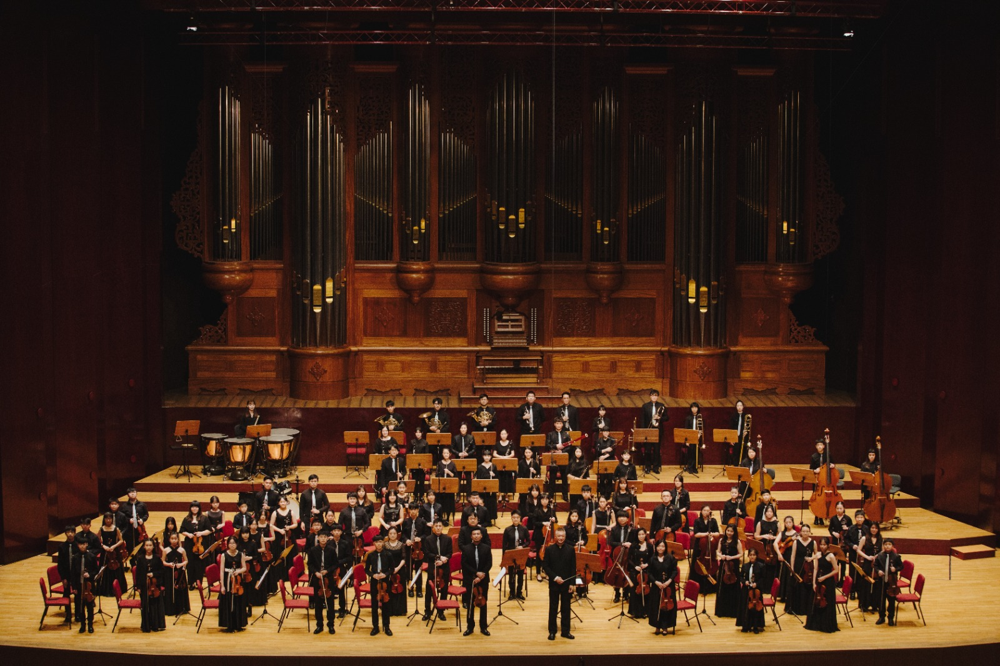
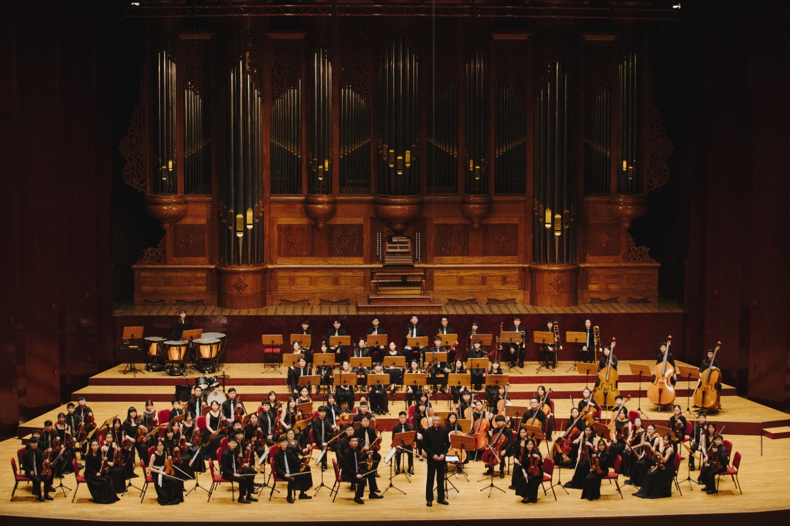

專業師資
由經驗豐富的師資團隊陪伴孩子扎實學習，建立穩定的音樂基礎。
About Us
藝享愛樂音樂教育推廣協會以音樂教育為核心，透過專業師資、合奏訓練與舞台演出，陪伴孩子在音樂中找到自信。
我們相信，音樂不只是演奏技巧，更是一段陪伴孩子探索自我、學習傾聽、培養合作與累積勇氣的人生旅程。
音樂可以陪伴孩子一輩子，也能成為他們勇敢迎向未來的力量。
由經驗豐富的師資團隊陪伴孩子扎實學習，建立穩定的音樂基礎。
重視每位孩子的學習步調，在鼓勵與支持中累積成就感。
透過音樂會與成果發表，讓孩子勇敢站上舞台、學會表達自己。
在合奏中學習傾聽、尊重與合作，體會與夥伴共同完成音樂的美好。
Our Orchestra
從基礎合奏到正式舞台演出，藝享愛樂陪伴孩子在團隊中學習傾聽、合作與表達，讓音樂成為成長路上最溫暖的力量。


透過完整編制與舞台實作，讓孩子累積正式演出的經驗。
以合奏為核心，建立穩定節奏、音準與彼此傾聽的能力。

與學校共同推動音樂教育，讓更多孩子接觸合奏與舞台。
Latest News
臺北市中山堂登場，從大眾跨界、歐陸頂峰到台灣在地情懷，帶來一場光與音的音樂餯宴。
查看完整消息 →系統化全新弦樂團體教材發表，與多位音樂教育工作者共同交流。
藝弦首席室內樂團與鋼琴家盧易之演出，於國家演奏廳圓滿完成。
藝享愛樂室內暨管弦／弦樂團團員甄選資訊。
新進教師甄選已甄選完畢，感謝大家的支持。
享樂樂學弦樂團演出，以弦音流轉記錄歲月與熱情。
藝享愛樂室內暨管弦樂團演出，於蘆洲功學社音樂廳圓滿完成。
多團聯合演出，於臺北市政府親子劇場展現孩子的舞台成長。
藝弦首席室內樂團於國家演奏廳演出，已圓滿結束。
Performance Archive
整理藝享愛樂自 2005 年至 2023 年的重要演出與活動。首頁先呈現近年紀錄，完整清單可前往專頁查看。